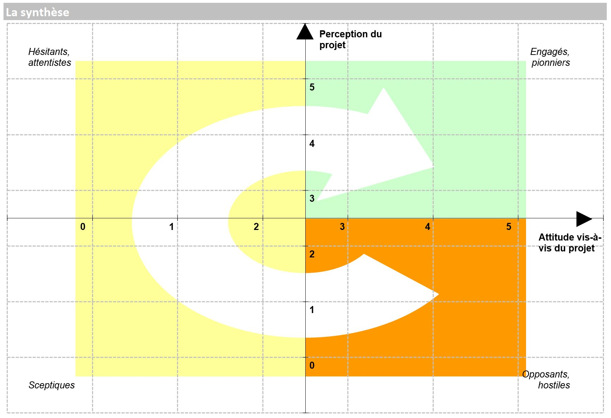

3 Evaluation
3.1 Modalités de contrôle de connaissance
Un rendu écrit sous la forme d’une infographie ou affiche (50%) qui fera l’objet d’une présentation orale (25%) et une note sur la participation et l’assiduité (25%).
3.1.1 Sur quoi serez vous noté ?
En groupe de 3 ou 4, vous allez devoir présenter une controverse en l’illustrant avec des données que vous pourrez trouver lors de vos recherches. Le tout sur un sujet concernant les politiques sociales.
A l’oral :
Sur la bonne répartition de votre temps de parole (tous les membres du groupe devront intervenir).
Sur la clarté et la cohérence de votre déroulé.
Sur la formulation de votre controverse.
Sur la façon dont vous éviterez de lire votre affiche : à l’oral, l’affiche sera un support mais vous devrez aller plus loin en proposant une présentation plus exhaustive et plus complète.
Chaque groupe sera aussi noté sur les questions et réactions aux travaux des autres groupes.
Sur votre capacité à faire le lien entre votre controverse et les éléments du cours.
Sur la variété de vos sources.
A l’écrit :
Sur votre synthèse du sujet.
Sur la formulation de votre controverse.
La forme comptera également mais ce ne sera pas l’élément essentiel (vous n’êtes pas graphiste).
3.2 C’est quoi une controverse ?
Vous trouverez des exemples là. En quelques mots, vous allez devoir analyser un sujet en tenant compte des différents argumentaires et points de vue qui peuvent exister. Pour qu’il y ait controverse, il faut du débat, des données et des arguments.
Pour cela, vous devrez mobiliser et exploiter des articles de presse, des émissions, des podcasts…
3.2.1 Quels sont les livrables attendus ?
Un livrable écrit sous la forme d’une affiche ou d’une infographie de synthèse, elle devra contenir les éléments suivants :
Le rappel du titre de votre controverse
Le contexte : quelle est la controverse ? d’où vient elle ?
Des chiffres clés (pensez dataviz !)
Les enjeux (en quoi la controverse est-elle importante ?)
La cartographie de la controverse : c’est un point important, c’est le coeur de votre controverse. Sous une forme visuelle (par exemple une mind map), vous devez indiquer qui est pour, qui est contre (il peut s’agir de personnes ou d’organismes) et les liens éventuels entre ces acteurs.
Une ou plusieurs sections avec : la date, les noms de vos équipiers
Lors de la dernière séance, vous présenterez à l’oral cette controverse. Vous devrez à ce moment présenter de façon plus complète votre travail. Par exemple avec :
Les concepts clés (terminologie, schémas)
Des citations (« verbatims »)
Une explication méthodologique : comment vous êtes vous réparti le travail ? quelles difficultés avez vous rencontrés ?
Des remerciements si vous avez réussi à interviewer ou correspondre avec des acteurs.
3.2.2 Exemples de thématiques
Ce ne sont que des exemples de sujets, vous pouvez en proposer d’autres ! Dans votre questionnement, il devra toujours y avoir une dimension “données”.
La lutte contre le non recours aux droits
L’IA au service de la santé
Centraliser les données de santé : le Health Data Hub
Les données et l’inclusion numérique
Les données et la crise COVID
Ouverture des données du secteur sanitaire et social
L’évaluation des politiques publiques
IA générative et politique sociale
3.2.3 Quelques conseils
3.2.3.1 Par où démarrer ?
Choisir un sujet et le formuler comme une question de débat. Par ex., sur la thématique “La lutte contre le non recours aux droits” peut être formulée de la façon suivante : “Les données peuvent-elles aider dans la lutte contre le non recours aux droits ?”.
Rechercher des articles, des émissions sur le sujet, notez bien vos sources.
Travailler sur le contexte : rechercher des chiffres clés, les grandes dates etc…
3.2.3.2 Réaliser la cartographie
Identifier les acteurs et leur positionnement : vous pouvez tenir un fichier avec les acteurs, ses arguments, son type (personne, association, ONG, entreprise…).
Positionner les acteurs sur la matrice suivante pour vous aider à réaliser la cartographie
Réaliser votre support visuel
3.2.4 Quelques outils pour vous aider
- Canva
- Visme
- Easel.ly
- Ou un bon vieux Powerpoint